건축기사 (2019-04-27 기출문제)
1과목: 건축계획
1. 주택의 부엌 계획에 관한 설명으로 옳지 않은 것은?
- 일사가 긴 서쪽은 음식물이 부패하기 쉬우므로 피하도록 한다.
- 작업 삼각형은 냉장고와 개수대 그리고 배선대를 잇는 삼각형이다.
- 부엌가구의 배치유형 중 ㄱ자형은 부엌과 식당을 겸할 경우 많이 활용되는 형식이다.
- 부엌가구의 배치유형 중 일렬형은 면적이 좁은 경우 이용에 효과적이므로 소규모 부엌에 주로 활용된다.
(정답률: 84%)

2. 상점의 매장 및 정면 구성에서 요구되는 AIDMA 법칙의 내용으로 옳지 않은 것은?
- Memory
- Interest
- Attention
- Attraction
(정답률: 85%)
3. 상점의 판매방식에 관한 설명으로 옳지 않은 것은?
- 측면판매방식은 직원 동선의 이동성이 많다.
- 대면판매방식은 측면판매방식에 비해 상품진열면적이 넓어진다.
- 측면판매방식은 고객이 직접 진열된 상품을 접촉할 수 있는 관계로 선택이 용이하다.
- 대면판매방식은 쇼케이스를 중심으로 판매원이 고정된 자리나 위치를 확보하는 것이 용이하다.
(정답률: 84%)
4. 다음 중 르 꼬르뷔제가 제시한 근대건축의 5원칙에 속하는 것은?
- 옥상정원
- 유기적 건축
- 노출 콘크리트
- 유니버셜 스페이스
(정답률: 79%)
5. 다음 중 구조코어로서 가장 바람직한 코어형식으로, 바닥면적이 큰 고층, 초고층사무소에 적합한 것은?
- 중심코어형
- 편심코어형
- 독립코어형
- 양단코어형
(정답률: 89%)
6. 도서관의 출납시스템 중 폐가식에 관한 설명으로 옳지 않은 것은?
- 서고와 열람실이 분리되어 있다.
- 도서의 유지 관리가 좋아 책의 망실이 적다.
- 대출절차가 간단하여 관원의 작업량이 적다.
- 규모가 큰 도서관의 독립된 서고의 경우에 많이 채용된다.
(정답률: 89%)
7. 척도 조정(M.C.)에 관한 설명으로 옳지 않은 것은?
- 설계작업이 단순해지고 간편해진다.
- 현장작업이 단순해지고 공기가 단축된다.
- 건축물 형태의 다양성 및 창조성 확보가 용이하다.
- 구성재의 상호조합에 의한 호환성을 확보할 수 있다.
(정답률: 79%)
8. 종합병원계획에 관한 설명으로 옳지 않은 것은?
- 수술부는 타 부분의 통과교통이 없는 장소에 배치한다.
- 수술실의 바닥은 전기도체성 마감을 사용하는 것이 좋다.
- 간호사 대기실은 각 간호단위 또는 층별, 동별로 설치한다.
- 평면계획 시 모듈을 적용하여 각 병실을 모두 동일한 크기로 하는 것이 좋다.
(정답률: 85%)
9. 봉정사 극락전에 관한 설명으로 옳지 않은 것은?
- 지붕은 팔작지붕의 형태를 띠고 있다.
- 공포를 주상에만 짜놓은 주심포 양식의 건축물이다.
- 우리나라에 현존하는 목조 건축물 중 가장 오래된 것이다.
- 정면 3칸에 측면 4칸의 규모이며 서남향으로 배치되어 있다.
(정답률: 49%)
10. 다음의 호텔 중 연면적에 대한 숙박면적의 비가 일반적으로 가장 큰 것은?
- 커머셜 호텔
- 클럽 하우스
- 리조트 호텔
- 아파트먼트 호텔
(정답률: 86%)
11. 테라스 하우스에 관한 설명으로 옳지 않은 것은?
- 경사가 심할수록 밀도가 높아진다.
- 각 세대의 깊이는 7.5m 이상으로 하여야한다.
- 평지보다 더 많은 인구를 수용할 수 있어 경제적이다.
- 시각적인 인공테라스형은 위층으로 갈수록 건물의 내부면적이 작아지는 형태이다.
(정답률: 70%)
12. 사무소 건축의 실단위 계획에 관한 설명으로 옳지 않은 것은?
- 개실 시스템은 독립성과 쾌적감의 이점이 있다.
- 개방식 배치는 전면적을 유용하게 사용할 수 있다.
- 개방식 배치는 개실 시스템보다 공사비가 저렴하다.
- 오피스 랜드스케이프(Office Landscape)는 개실 시스템을 위한 실단위계획이다.
(정답률: 83%)
13. 아파트의 평면형식에 관한 설명으로 옳지 않은 것은?
- 중복도형은 부지의 이용률이 적다.
- 홀형(계단실형)은 독립성(privacy)이 우수하다.
- 집중형은 복도부분 자연환기, 채광이 극히 나쁘다.
- 편복도형은 복도를 외기에 터놓으면 통풍, 채광이 중복도형보다 양호하다.
(정답률: 77%)
14. 극장건축에서 무대의 제일 뒤에 설치되는 무대 배경용의 벽을 의미하는 것은?
- 사이클로라마
- 플라이 로프트
- 플라이 갤러리
- 그리드 아이언
(정답률: 85%)
15. 주택 단지 내 도로의 형태 중 쿨데삭(cul-de-sac)형에 관한 설명으로 옳지 않은 것은?
- 통과교통이 방지된다.
- 우회도로가 없기 때문에 방재·방범상으로는 불리하다.
- 주거환경의 쾌적성과 안전성 확보가 용이하다.
- 대규모 주택 단지에 주로 사용되며, 도로의 최대 길이는 1km 이하로 한다.
(정답률: 74%)
16. 학교의 배치형식 중 분산병렬형에 관한 설명으로 옳지 않은 것은?
- 일종의 핑거 플랜이다.
- 구조계획이 간단하고 시공이 용이하다.
- 부지의 크기에 상관없이 적용이 용이하다.
- 일조·통풍 등 교실의 환경조건을 균등하게 할 수 있다.
(정답률: 81%)
17. 미술관 전시공간의 순회형식 중 갤러리 및 코리더 형식에 관한 설명으로 옳은 것은?
- 복도의 일부를 전시장으로 사용할 수 있다.
- 전시실 중 하나의 실을 폐쇄하면 동선이 단절된다는 단점이 있다.
- 중앙에 커다란 홀을 계획하고 그 홀에 접하여 전시실을 배치한 형식이다.
- 이 형식을 채용한 대표적인 건축물로는 뉴욕 근대 미술관과 프랭크 로이드 라이트의 구겐하임 미술관이 있다.
(정답률: 75%)
18. 다음 중 전시공간의 융통성을 주요 건축개념으로 한 것은?
- 퐁피두 센터
- 루브르 박물관
- 구겐하임 미술관
- 슈투트가르트 미술관
(정답률: 78%)
19. 다음 중 건축가와 작품의 연결이 옳지 않은 것은?
- 르 꼬르뷔지에 - 사보이 주택
- 오스카 니마이어 - 브라질 국회의사당
- 미스 반 데어 로에 - 뉴욕 레버하우스
- 프랭크 로이드 라이트 - 뉴욕 구겐하임 미술관
(정답률: 67%)
20. 공장 건축계획에 관한 설명으로 옳지 않은 것은?
- 기능식 레이아웃은 소종다량생산이나 표준화가 쉬운 경우에 주로 적용된다.
- 공장의 지붕형식 중 톱날지붕은 균일한 조도를 얻을 수 있다는 장점이 있다.
- 평면계획 시 관리부분과 생산공정부분을 구분하고 동선이 혼란되지 않게 한다.
- 공장건축의 형식에서 집중식(Block Type)은 건축비가 저렴하고, 공간효율도 좋다.
(정답률: 67%)
2과목: 건축시공
21. 다음과 같은 철근 콘크리트조 건축물에서 외줄 비계면적으로 옳은 것은? (단, 비계 높이는 건축물의 높이로 함)
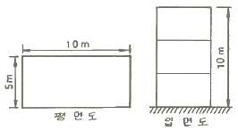
- 300 m2
- 336 m2
- 372 m2
- 400 m2
(정답률: 54%)
22. 건설현장에서 공사감리자로 근무하고 있는 A씨가 하는 업무로 옳지 않은 것은?
- 상세시공도면의 작성
- 공사시공자가 사용하는 건축자재가 관계법령에 의한 기준에 적합한 건축자재인지 여부의 확인
- 공사현장에서의 안전관리지도
- 품질시험의 실시여부 및 시험성과의 검토, 확인
(정답률: 85%)
23. 다음 각 유리에 관한 설명으로 옳지 않은 것은?
- 망입유리는 파손되더라도 파편이 튀지 않으므로 진동에 의해 파손되기 쉬운 곳에 사용된다.
- 복층유리는 단열 및 차음성이 좋지 않아 주로 선박의 창 등에 이용된다.
- 강화유리는 압축강도를 한층 강화한 유리로 현장가공 및 절단이 되지 않는다.
- 자외선 투과유리는 병원이나 온실 등에 이용된다.
(정답률: 76%)
24. 열적외선을 반사하는 은소재 도막으로 코팅하여 방사율과 열관류율을 낮추고 가시광선 투과율을 높인 유리는?
- 스팬드럴 유리
- 접합유리
- 배강도유리
- 로이유리
(정답률: 81%)
25. 다음 중 가설비용의 종류로 볼 수 없는 것은?
- 가설건물비
- 바탕처리비
- 동력, 전등설비
- 용수설비
(정답률: 67%)
26. 공사장 부지 경계선으로부터 50m 이내에 주거·상가건물이 있는 경우에 공사현장 주위에 가설울타리는 최소 얼마 이상의 높이로 설치하여야 하는가?
- 1.5 m
- 1.8 m
- 2 m
- 3 m
(정답률: 60%)
27. 보통 콘크리트용 부순 골재의 원석으로서 가장 적합하지 않은 것은?
- 현무암
- 응회암
- 안산암
- 화강암
(정답률: 70%)
28. 콘크리트 균열의 발생 시기에 따라 구분할 때 콘크리트의 경화 전 균열의 원인이 아닌 것은?
- 크리프 수축
- 거푸집의 변형
- 침하
- 소성수축
(정답률: 62%)
29. 조적식 구조의 기초에 관한 설명으로 옳지 않은 것은?
- 내력벽의 기초는 연속 기초로 한다.
- 기초판은 철근콘크리트 구조로 할 수 있다.
- 기초판은 무근콘크리트 구조로 할 수 있다.
- 기초벽의 두께는 최하층의 벽체 두께와 같게 하되, 250mm 이하로 하여야 한다.
(정답률: 61%)
30. 다음 중 조적벽 치장줄눈의 종류로 옳지 않은 것은?
- 오목줄눈
- 빗줄눈
- 통줄눈
- 실줄눈
(정답률: 68%)
31. 타격에 의한 말뚝박기공법을 대체하는 저소음, 저진동의 말뚝공법에 해당되지 않는 것은?
- 압입 공법
- 사수(Water jetting) 공법
- 프리보링 공법
- 바이브로 콤포저 공법
(정답률: 64%)
32. 표준시방서에 따른 시스템비계에 관한 기준으로 옳지 않은 것은?
- 수직재와 수직재의 연결은 전용의 연결조인트를 사용하여 견고하게 연결하고, 연결 부위가 탈락 또는 꺾어지지 않도록 하여야 한다.
- 수평재는 수직재에 연결핀 등의 결합 방법에 의해 견고하게 결합되어 흔들리거나 이탈되지 않도록 하여야 한다.
- 대각으로 설치하는 가새는 비계의 외면으로 평면에 대해 40~60° 방향으로 설치하며 수평재 및 수직재에 결속한다.
- 시스템 비계 최하부에 설치하는 수직재는 받침 철물의 조절너트와 밀착되도록 설치하여야 하며, 수직과 수평을 유지하여야 한다. 이때, 수직재와 받침 철물의 겹침길이는 받침 철물 전체길이의 5분의 1이상이 되도록 하여야 한다.
(정답률: 76%)
33. 금속 커튼월의 Mock Up Test에 있어 기본성능 시험의 항목에 해당되지 않는 것은?
- 정압수밀시험
- 방재시험
- 구조시험
- 기밀시험
(정답률: 58%)
34. 시멘트 광물질의 조성중에서 발열량이 높고 응결시간이 가장 빠른 것은?
- 알루민산 삼석회
- 규산삼석회
- 규산이석회
- 알루민산철 사석회
(정답률: 72%)
35. 철골공사의 접합에 관한 설명으로 옳지 않은 것은?
- 고력볼트접합의 종류에는 마찰접합, 지압접합이 있다.
- 녹막이도장은 작업장소 주위의 기온이 5℃ 미만이거나 상대습도가 85%를 초과할때는 작업을 중지한다.
- 철골이 콘크리트에 묻히는 부분은 특히 녹막이 칠을 잘해야 한다.
- 용접 접합에 대한 비파괴시험의 종류에는 자분탐상시험, 초음파탐상시험 등이 있다.
(정답률: 73%)
36. 다음 중 열가소성수지에 해당하는 것은?
- 페놀수지
- 염화비닐수지
- 요소수지
- 멜라민수지
(정답률: 67%)
37. 고강도 콘크리트의 배합에 대한 기준으로 옳지 않은 것은?
- 단위수량은 소요의 워커빌리티를 얻을 수 있는 범위 내에서 가능한 작게 하여야 한다.
- 잔골재율은 소요의 워커빌리티를 얻도록 시험에 의하여 결정하여야 하며, 가능한 작게 하도록 한다.
- 고성능 감수제의 단위량은 소요 강도 및 작업에 적합한 워커빌리티를 얻도록 시험에의해서 결정하여야 한다.
- 기상의 변화 등에 관계없이 공기연행제를 사용하는 것을 원칙으로 한다.
(정답률: 70%)
38. 프리스트레스트 콘크리트(prestressed concrete)에 관한 설명으로 옳지 않은 것은?
- 포스트텐션(post-tension)공법은 콘크리트의 강도가 발현된 후에 프리스트레스를 도입하는 현장형 공법이다.
- 구조물의 자중을 경감할 수 있으며, 부재단면을 줄일 수 있다.
- 화재에 강하며, 내화피복이 불필요하다.
- 고강도이면서 수축 또는 크리프 등의 변형이 적은 균일한 품질의 콘크리트가 요구된다.
(정답률: 75%)
39. 공정관리에서의 네트워크(Network)에 관한 용어와 관계 없는 것은?
- 커넥터(connector)
- 크리티컬 패스(critical path)
- 더미(dummy)
- 플로우트(float)
(정답률: 72%)
40. 건축공사 스프레이 도장방법에 관한 설명으로 옳지 않은 것은?
- 도장거리는 스프레이 도장면에서 300mm를 표준으로 한다.
- 매 회에 에어스프레이는 붓도장과 동등한 정도의 두께로 하고, 2회분의 도막 두께를 한 번에 도장하지 않는다.
- 각 회의 스프레이 방향은 전회의 방향에 평행으로 진행한다.
- 스프레이할 때는 항상 평행이동하면서 운행의 한 줄마다 스프레이 너비의 1/3정도를 겹쳐 뿜는다.
(정답률: 72%)
3과목: 건축구조
41. 철근콘크리트 T형보의 유효폭 산정식에 관련된 사항과 거리가 먼 것은?
- 보의 폭
- 슬래브 중심간 거리
- 슬래브의 두께
- 보의 춤
(정답률: 66%)
42. 인장이형철근의 정착길이를 산정할 때 적용되는 보정계수에 해당되지 않는 것은?
- 철근배근 위치 계수
- 철근도막계수
- 크리프 계수
- 경량 콘크리트 계수
(정답률: 60%)
43. 강도설계법에서 처짐을 계산하지 않는 경우 스팬이 8.0m인 단순지지된 보의 최소 두께로 옳은 것은? (단, 보통중량콘크리트와 fy=400MPa 철근을 사용한 경우)
- 380 mm
- 430 mm
- 500 mm
- 600 mm
(정답률: 57%)
44. 구조물의 내진보강 대책으로 적합하지 않은 것은?
- 구조물의 강도를 증가시킨다.
- 구조물의 연성을 증가시킨다.
- 구조물의 중량을 증가시킨다.
- 구조물의 감쇠를 증가시킨다.
(정답률: 71%)
45. 각종 단면의 주축(主軸)을 표시한 것으로 옳지 않은 것은?
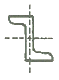
(정답률: 57%)
46. 그림과 같은 ㄷ형강(Channel)에서 전단중심(剪斷中心)의 대략적인 위치는?
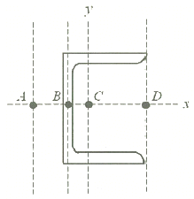
- A점
- B점
- C점
- D점
(정답률: 67%)
47. 철근콘크리트 단근보에서 균형철근비를 계산한 결과 ρb=0.039 이었다. 최대철근비는? (단, E=20000 MPa, fy=400 MPa, fck=24 MPa 임)
- 0.01863
- 0.02256
- 0.02607
- 0.02785
(정답률: 49%)
48. 그림과 같은 단순보에서 A점과 B점에 발생하는 반력으로 옳은 것은?
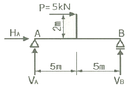
- HA = +5kN, VA = +1kN, VB = +1kN
- HA = -5kN, VA = -1kN, VB = +1kN
- HA = +5kN, VA = +1kN, VB = -1kN
- HA = -5kN, VA = +1kN, VB = +1kN
(정답률: 65%)
49. 보 또는 보의 역할을 하는 리브나 지판이 없어 기둥으로 하중을 전달하는 2방향으로 철근이 배치된 콘크리트 슬래브는?
- 위플 슬래브(Waffle slab)
- 플랫 플레이트(Flat plate)
- 플랫 슬래브(Flat slab)
- 데크플레이트 슬래브(Deck plate slab)
(정답률: 48%)
50. 그림과 같은 도형의 x-x축에 대한 단면 2차모멘트는?
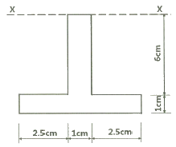
- 326 cm4
- 278 cm4
- 215 cm4
- 188 cm4
(정답률: 47%)
51. 다음과 같은 단순보의 최대 처짐량(δmax)이 30cm 이하가 되기 위하여 보의 단면 2차모멘트는 최소 얼마 이상이 되어야하는가? (단, 보의 탄성계수는 E=1.25×104N/mm2)(문제 오류로 가답안 발표시 2번으로 발표되었지만 확정 답안 발표시 전항 정답 처리 되었습니다. 여기서는 가답안인 2번을 누르면 정답 처리 됩니다.)
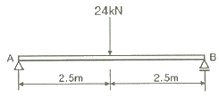
- 15000 cm4
- 16700 cm4
- 20000 cm4
- 25000 cm4
(정답률: 69%)
52. 다음 중 압축재의 좌굴하중 산정 시 직접적인 관계가 없는 것은?
- 부재의 푸아송비
- 부재의 단면2차모멘트
- 부재의 탄성계수
- 부재의 지지조건
(정답률: 65%)
53. 횡력의 25% 이상을 부담하는 연성모멘트 골조가 전단벽이나 가새골조와 조합되어 있는 구조방식을 무엇이라 하는가?
- 재진시스템방식
- 면진시스템방식
- 이중골조방식
- 메가칼럼-전단벽 구조방식
(정답률: 77%)
54. 저층 강구조 장스팬 건물의 구조계획에서 고려해야 할 사항과 가장 관계가 적은 것은?
- 층고, 지붕형태 등 건물의 형상 산정
- 적절한 골조 간격의 선정
- 강절점, 활절점에 대한 부재의 접합방법 선정
- 풍하중에 의한 횡변위 제어방법
(정답률: 71%)
55. 하중저항계수설계법에 따른 강구조 연결 설계기준을 근거로 할 때 고장력볼트의 직경 M24 라면 표준 구멍의 직경으로 옳은 것은?
- 26mm
- 27mm
- 28mm
- 30mm
(정답률: 68%)
56. 다음 강종 표시기호에 관한 설명으로 옳지 않은 것은? (단, KS 강종기호 개정사항 반영)
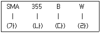
- (가) : 용도에 따른 강재의 명칭 구분
- (나) : 강재의 인장강도 구분
- (다) : 충격흡수에너지 등급 구분
- (라) : 내후성 등급 구분
(정답률: 58%)
57. 폭 b=250mm, 높이 h=500mm 인 직사각형 콘크리트 보 부재의 균열모멘트 Mcr은? (단, 경량콘크리트계수 λ=1, fck=24MPa)
- 8.3 kN·m
- 16.4 kN·m
- 24.5 kN·m
- 32.2 kN·m
(정답률: 56%)
58. H-300×150×6.5×9 인 형강보가 10kN의 전단력을 받을 때 웨브에 생기는 전단응력도의 크기는 약 얼마인가? (단, 웨브전단면적 산정 시 플랜지 두께는 제외함)
- 3.46 MPa
- 4.46 MPa
- 5.46 MPa
- 6.46 MPa
(정답률: 47%)
59. 그림과 같은 라멘의 AB재에 휨모멘트가 발생하지 않게 하려면 P는 얼마가 되어야하는가?
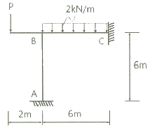
- 3 kN
- 4 kN
- 5 kN
- 6 kN
(정답률: 53%)
60. 그림과 같은 트러스(truss)에서 T부재에 발생하는 부재력으로 옳은 것은?
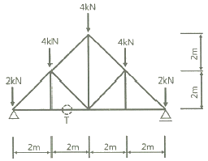
- 4 kN
- 6 kN
- 8 kN
- 16 kN
(정답률: 51%)
4과목: 건축설비
61. 작업구역에는 전용의 국부조명방식으로 조명하고, 기타 주변 환경에 대하여는 간접조명과 같은 낮은 조도레벨로 조명하는 방식은?
- TAL 조명방식
- 반직접 조명방식
- 반간접 조명방식
- 전반확산 조명방식
(정답률: 57%)
62. 다음의 냉방부하 발생요인 중 현열부하만 발생시키는 것은?
- 인체의 발생열량
- 벽체로부터의 취득열량
- 극간풍에 의한 취득열량
- 외기의 도입으로 인한 취득열량
(정답률: 69%)
63. 급탕설비에 관한 설명으로 옳지 않은 것은?
- 냉수, 온수를 혼합 사용해도 압력차에 의한 온도변화가 없도록 한다.
- 배관은 적정한 압력손실 상태에서 피크시를 충족시킬 수 있어야 한다.
- 도피관에는 압력을 도피시킬 수 있도록 밸브를 설치하고 배수는 직접배수로 한다.
- 밀폐형 급탕시스템에는 온도상승에 의한 압력을 도피시킬 수 있는 팽창탱크 등의 장치를 설치한다.
(정답률: 69%)
64. 가스사용시설의 가스계량기에 관한 설명으로 옳지 않은 것은?
- 가스계량기와 전기점멸기와의 거리는 30cm이상 유지하여야 한다.
- 가스계량기와 전기계량기와의 거리는 60cm이상 유지하여야 한다.
- 가스계량기와 전기개폐기와의 거리는 60cm이상 유지하여야 한다.
- 공동주택의 경우 가스계량기는 일반적으로 대피공간이나 주방에 설치한다.
(정답률: 62%)
65. 다음의 저압 옥내배선방법 중 노출되고 습기가 많은 장소에 시설이 가능한 것은? (단, 400[V] 미만인 경우)
- 금속관 배선
- 금속몰드 배선
- 금속덕트 배선
- 플로어덕트 배선
(정답률: 60%)
66. 바닥복사 난방방식에 관한 설명으로 옳지 않은 것은?
- 열용량이 커서 예열시간이 짧다.
- 방을 개방상태로 하여도 난방효과가 있다.
- 다른 난방방식에 비교하여 쾌적감이 높다.
- 실내에 방열기를 설치하지 않으므로 바닥이나 벽면을 유용하게 이용할 수 있다.
(정답률: 75%)
67. 다음 중 습공기를 가열하였을 때 증가하지 않는 상태량은?
- 엔탈피
- 비체적
- 상대습도
- 습구온도
(정답률: 60%)
68. 냉방설비의 냉각탑에 관한 설명으로 옳은 것은?
- 열에너지에 의해 냉동효과를 얻는 장치
- 냉동기의 냉각수를 재활용하기 위한 장치
- 임펠러의 원심력에 의해 냉매가스를 압축하는 장치
- 물과 브롬화리튬 혼합용액으로부터 냉매인 수증기와 흡수제인 LiBr로 분리시키는 장치
(정답률: 76%)
69. 다음의 에스컬레이터의 경사도에 관한 설명 중 ( )안에 알맞은 것은?
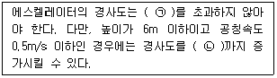
- ㉠ 25°, ㉡ 30°
- ㉠ 25°, ㉡ 35°
- ㉠ 30°, ㉡ 35°
- ㉠ 30°, ㉡ 40°
(정답률: 72%)
70. 점광원으로부터의 거리가 n배가 되면 그 값은 1/n2배가 된다는 '거리의 역제곱의 법칙'이 적용되는 빛환경 지표는?
- 조도
- 광도
- 휘도
- 복사속
(정답률: 72%)
71. 건구온도 26℃인 실내공기 8000m3/h 와 건구온도 32℃인 외부공기 2000m3/h 를 단열혼합였을 때 혼합공기의 건구온도는?
- 27.2℃
- 27.6℃
- 28.0℃
- 29.0℃
(정답률: 68%)
72. 트랩의 구비 조건으로 옳지 않은 것은?
- 봉수깊이는 50mm 이상 100mm 이하일 것
- 오수에 포함된 오물 등이 부착 또는 침전하기 어려운 구조일 것
- 봉수부에 이음을 사용하는 경우에는 금속제 이음을 사용하지 않을 것
- 봉수부의 소제구는 나사식 플러그 및 적절한 가스켓을 이용한 구조일 것
(정답률: 61%)
73. 100[V], 500[W] 의 전열기를 90[V]에서 사용할 경우 소비 전력은?
- 200[W]
- 310[W]
- 4⑤[W]
- 420[W]
(정답률: 62%)
74. 직경 200mm의 배관을 통하여 물이 1.5m/s의 속도로 흐를 때 유량은?
- 2.83 m3/min
- 3.2 m3/min
- 3.83 m3/min
- 6.0 m3/min
(정답률: 50%)
75. 습공기의 상태변화에 관한 설명으로 옳지 않은 것은?
- 가열하면 엔탈피는 증가한다.
- 냉각하면 비체적은 감소한다.
- 가열하면 절대습도는 증가한다.
- 냉각하면 습구온도는 감소한다.
(정답률: 78%)
76. 온열지표 중 기온, 습도, 기류, 주벽면온도의 4요소를 조합하여 체감과의 관계를 나타낸 것은?
- 작용온도
- 불쾌지수
- 등온지수
- 유효온도
(정답률: 53%)
77. 소방시설은 소화설비, 경보설비, 피난구조설비, 소화용수설비, 소화활동설비로 구분할 수 있다. 다음 중 소화활동설비 속하는 것은?
- 제연설비
- 비상방송설비
- 스프링클러설비
- 자동화재탐지설비
(정답률: 63%)
78. TV 공청설비의 주요 구성기기에 속하지 않은 것은?
- 증폭기
- 월패드
- 컨버터
- 혼합기
(정답률: 68%)
79. 전력부하 산정에서 수용률 산정 방법으로 옳은 것은?
- (부등율/설비용량)×100%
- (최대수용전력/부등율)×100%
- (최대수용전력/설비용량)×100%
- (부하각개의 최대 수용전력합계/각 부하를 합한 최대수용전력)×100%
(정답률: 63%)
80. 크로스 커넥션(cross connection)에 관한 설명으로 가장 알맞은 것은?
- 관로 내의 유체의 유동이 급격히 변화하여 압력변화를 일으키는 것
- 상수의 급수·급탕계통과 그 외의 계통배관이 장치를 통하여 직접 접속되는 것
- 겨울철 난방을 하고 있는 실내에서 창을 타고 차가운 공기가 하부로 내려오는 현상
- 급탕·반탕관의 순환거리를 각 계통에 있어서 거의 같게 하여 전 계통의 탕의 순환을 촉진하는 방식
(정답률: 59%)
5과목: 건축법규
81. 다음은 대피공간의 설치에 관한 기준 내용이다. 밑줄 친 요건 내용으로 옳지 않은 것은?
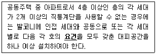
- 대피공간은 바깥의 공기와 접하지 않을 것
- 대피공간은 실내의 다른 분과 방화구획으로 구획될 것
- 대피공간의 바닥면적은 각 세대별로 설치하는 경우에는 2m2 이상일 것
- 대피공간의 바닥면적은 인접 세대와 공동으로 설치하는 경우에는 3m2 이상일 것
(정답률: 68%)
82. 건축법령상 다음과 같이 정의되는 용어는?
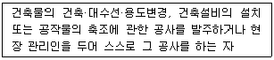
- 건축주
- 건축사
- 설계자
- 공사시공자
(정답률: 76%)
83. 용도지역의 건폐율 기준으로 옳지 않은 것은?
- 주거지역 : 70% 이하
- 상업지역 : 90% 이하
- 공업지역 : 70% 이하
- 녹지지역 : 30% 이하
(정답률: 69%)
84. 국토의 계획 및 이용에 관한 법령상 광장·공원·녹지·유원지·공공공지가 속하는 기반 시설은?
- 교통시설
- 공간시설
- 환경기초시설
- 공공·문화체육시설
(정답률: 68%)
85. 다음 중 특별건축구역으로 지정할 수 없는 구역은?
- 「도로법」에 따른 접도구역
- 「택지개발촉진법」에 따른 택지개발사업구역 지역의 사업구역
- 국가가 국제행사 등을 개최하는 도시 또는 지역의 사업구역
- 지방자치단체가 국제행사 등을 개최하는 도시 또는 지역의 사업구역
(정답률: 70%)
86. 같은 건축물 안에 공동주택과 위락시설을 함께 설치하고자 하는 경우에 관한 기준 내용으로 옳지 않은 것은?
- 건축물의 주요 구조부를 내화구조로 할 것
- 공동주택과 위락시설은 서로 이웃하도록 배치 할 것
- 공동주택과 위락시설은 내화구조로 된 바닥 및 벽으로 구획하여 서로 차단할 것
- 공동주택의 출입구와 위락시설의 출입구는 서로 그 보행거리가 30m 이상이 되도록 설치 할 것
(정답률: 70%)
87. 부설주차장의 설치대상 시설물 종류와 설치 기준의 연결이 옳지 않은 것은?
- 위락시설 – 시설면적 150 m2 당 1대
- 종교시설 – 시설면적 150 m2 당 1대
- 판매시설 – 시설면적 150 m2 당 1대
- 수련시설 – 시설면적 350 m2 당 1대
(정답률: 67%)
88. 용적률 산정에 사용되는 연면적에 포함되는 것은?
- 지하층의 면적
- 층고가 2.1m인 다락의 면적
- 준초고층 건축물에 설치하는 피난안전구역의 면적
- 건축물의 경사지붕 아래에 설치하는 대피 공간의 면적
(정답률: 72%)
89. 다음 설명에 알맞은 용도지구의 세분은?
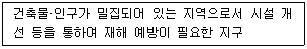
- 시가지방재지구
- 특정개발진흥지구
- 복합개발진흥지구
- 중요시설물보호지구
(정답률: 77%)
90. 건축허가를 하기 전에 건축물의 구조안전과 인접 대지의 안전에 미치는 영향 등을 평가하는 건축물 안전영향평가를 실시하여야 하는 대상 건축물 기준으로 옳은 것은?
- 층수가 6층 이상으로 연면적 1만 제곱미터 이상인 건축물
- 층수가 6층 이상으로 연면적 10만 제곱미터 이상인 건축물
- 층수가 16층 이상으로 연면적 1만 제곱미터 이상인 건축물
- 층수가 16층 이상으로 연면적 10만 제곱미터 이상인 건축물
(정답률: 47%)
91. 건축물에 설치하는 피난안전구역의 구조 및 설비에 관한 기준 내용으로 옳지 않은 것은?
- 피난안전구역의 높이는 1.8m 이상일 것
- 피난안전구역의 내부마감재료는 불연재료로 설치할 것
- 비상용 승강기는 피난안전구역에서 승하차 할 수 있는 구조로 설치할 것
- 건축물의 내부에서 피난안전구역으로 통하는 계단은 특별피난계단의 구조로 설치할 것
(정답률: 67%)
92. 건축물과 해당 건축물의 용도의 연결이 옳지 않은 것은?
- 주유소 - 자동차관련시설
- 야외음악당 - 관광휴게시설
- 치과의원 - 제1종 근린생활시설
- 일반음식점 - 제2종 근린생활시설
(정답률: 61%)
93. 6층 이상의 거실면적의 합계가 12000m2 인 문화 및 집회시설 중 전시장에 설치하여야 하는 승용승강기의 최소 대수는? (단, 8인승 승강기 기준)
- 4대
- 5대
- 6대
- 7대
(정답률: 51%)
94. 피난용승강기의 설치에 관한 기준 내용으로 옳지 않은 것은?
- 예비전원으로 작동하는 조명설비를 설치할 것
- 승강장의 바닥면적은 승강기 1대당 5m2 이상으로 할 것
- 각 층으로부터 피난층까지 이르는 승강로를 단일구조로 연결하여 설치할 것
- 승강장의 출입구 부근의 잘 보이는 곳에 해당 승강기가 피난용승강기임을 알리는 표지를 설치할 것
(정답률: 76%)
95. 국토의 계획 및 이용에 관한 법령상 아파트를 건축할 수 있는 지역은?
- 자연녹지지역
- 제1종 전용주거지역
- 제2종 전용주거지역
- 제1종 일반주거지역
(정답률: 69%)
96. 지하층에 설치하는 비상탈출구의 유효너비 및 유효높이 기준으로 옳은 것은? (단, 주택이 아닌 경우)
- 유효너비 0.5m 이상, 유효높이 1.0m 이상
- 유효너비 0.5m 이상, 유효높이 1.5m 이상
- 유효너비 0.75m 이상, 유효높이 1.0m 이상
- 유효너비 0.75m 이상, 유효높이 1.5m 이상
(정답률: 66%)
97. 평행주차형식으로 일반형인 경우 주차장의 주차단위구획의 크기 기준으로 옳은 것은?
- 너비 1.7m 이상, 길이 5.0m 이상
- 너비 1.7m 이상, 길이 6.0m 이상
- 너비 2.0m 이상, 길이 5.0m 이상
- 너비 2.0m 이상, 길이 6.0m 이상
(정답률: 54%)
98. 노외주차장의 구조·설비에 관한 기준 내용으로 옳지 않은 것은?
- 출입구의 너비는 3.0m 이상으로 하여야 한다.
- 주차구획선의 긴 변과 짧은 변 중 한 변 이상이 차로에 접하여야 한다.
- 지하식인 경우 차로의 높이는 주차바닥면으로부터 2.3m 이상으로 하여야 한다.
- 주차에 사용되는 부분의 높이는 주차바닥면으로부터 2.1m 이상으로 하여야 한다.
(정답률: 50%)
99. 다음은 건축선에 따른 건축제한에 관한 기준 내용이다. ( )안에 알맞은 것은?
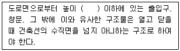
- 3m
- 4.5m
- 6m
- 10m
(정답률: 67%)
100. 다음은 대지의 조경에 관한 기준 내용이다. ( )안에 알맞은 것은?
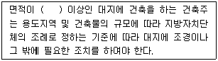
- 100 m2
- 150 m2
- 200 m2
- 300 m2
(정답률: 68%)